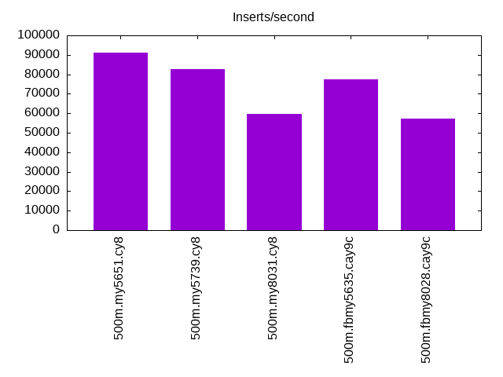
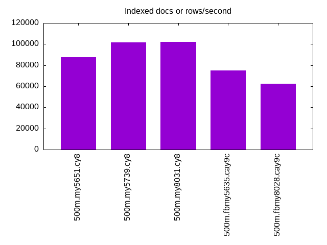
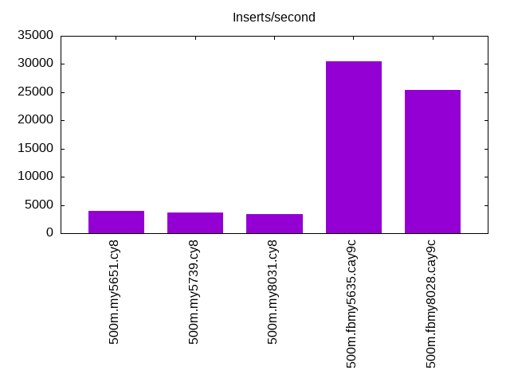
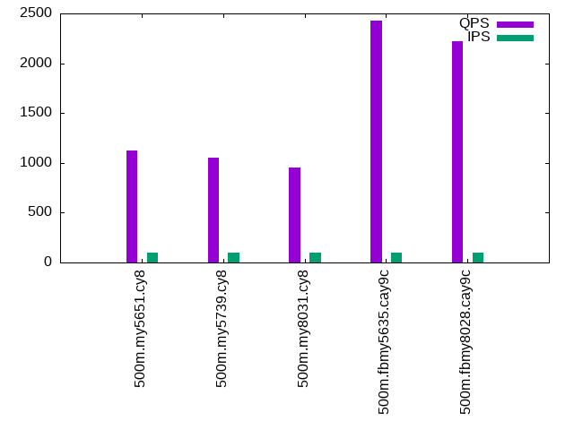
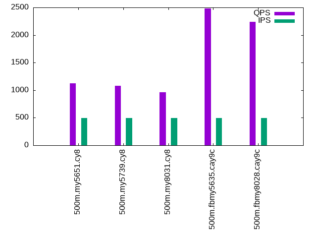
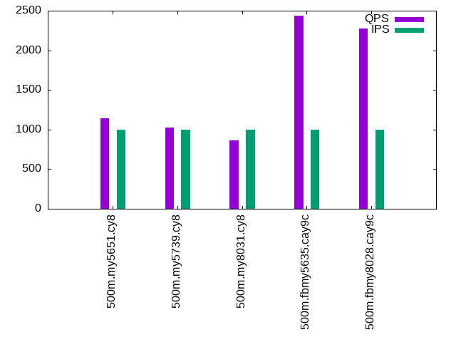

This is a report for the insert benchmark with 500M docs and 1 client(s). It is generated by scripts (bash, awk, sed) and Tufte might not be impressed. An overview of the insert benchmark is here and a short update is here. Below, by DBMS, I mean DBMS+version.config. An example is my8020.c10b40 where my means MySQL, 8020 is version 8.0.20 and c10b40 is the name for the configuration file.
The test server has 8 AMD cores, 16G RAM and an NVMe SSD. It is described here as the Beelink. The benchmark was run with 1 clients and there were 1 or 2 connections per client (1 for queries, 1 for inserts). The benchmark loads 500M rows without secondary indexes, creates secondary indexes, loads another 10M rows then does 3 read+write tests for one hour each that do queries as fast as possible with 100, 500 and then 1000 writes/second/client concurrent with the queries. The database doesn't fit in memory and parts of the benchmark are IO-bound. Clients and the DBMS share one server. The per-database configs are in the per-database subdirectories here.
The tested DBMS are:
The numbers are inserts/s for l.i0 and l.i1, indexed docs (or rows) /s for l.x and queries/s for q*.2. The values are the average rate over the entire test for inserts (IPS) and queries (QPS). The range of values for IPS and QPS is split into 3 parts: bottom 25%, middle 50%, top 25%. Values in the bottom 25% have a red background, values in the top 25% have a green background and values in the middle have no color. A gray background is used for values that can be ignored because the DBMS did not sustain the target insert rate. Red backgrounds are not used when the minimum value is within 80% of the max value.
| dbms | l.i0 | l.x | l.i1 | q100.1 | q500.1 | q1000.1 |
|---|---|---|---|---|---|---|
| 500m.my5651.cy8 | 91174 | 87369 | 3989 | 1120 | 1122 | 1140 |
| 500m.my5739.cy8 | 82645 | 101729 | 3731 | 1051 | 1082 | 1024 |
| 500m.my8031.cy8 | 59602 | 101874 | 3442 | 950 | 960 | 863 |
| 500m.fbmy5635.cay9c | 77232 | 75226 | 30488 | 2425 | 2479 | 2439 |
| 500m.fbmy8028.cay9c | 57234 | 62364 | 25445 | 2221 | 2238 | 2279 |
This lists the average rate of inserts/s for the tests that do inserts concurrent with queries. For such tests the query rate is listed in the table above. The read+write tests are setup so that the insert rate should match the target rate every second. Cells that are not at least 95% of the target have a red background to indicate a failure to satisfy the target.
| dbms | q100.1 | q500.1 | q1000.1 |
|---|---|---|---|
| my5651.cy8 | 100 | 499 | 999 |
| my5739.cy8 | 100 | 499 | 999 |
| my8031.cy8 | 100 | 499 | 999 |
| fbmy5635.cay9c | 100 | 499 | 999 |
| fbmy8028.cay9c | 100 | 499 | 999 |
| target | 100 | 500 | 1000 |
l.i0: load without secondary indexes. Graphs for performance per 1-second interval are here.
Average throughput:
Insert response time histogram: each cell has the percentage of responses that take <= the time in the header and max is the max response time in seconds. For the max column values in the top 25% of the range have a red background and in the bottom 25% of the range have a green background. The red background is not used when the min value is within 80% of the max value.
| dbms | 256us | 1ms | 4ms | 16ms | 64ms | 256ms | 1s | 4s | 16s | gt | max |
|---|---|---|---|---|---|---|---|---|---|---|---|
| my5651.cy8 | 54.129 | 45.552 | 0.274 | 0.037 | 0.008 | nonzero | 1.118 | ||||
| my5739.cy8 | 0.099 | 99.726 | 0.155 | 0.018 | 0.002 | nonzero | 0.697 | ||||
| my8031.cy8 | 99.805 | 0.185 | 0.010 | nonzero | nonzero | 0.438 | |||||
| fbmy5635.cay9c | 99.995 | 0.001 | 0.004 | nonzero | 0.246 | ||||||
| fbmy8028.cay9c | 99.926 | 0.068 | 0.004 | 0.002 | 0.193 |
Performance metrics for the DBMS listed above. Some are normalized by throughput, others are not. Legend for results is here.
ips qps rps rmbps wps wmbps rpq rkbpq wpi wkbpi csps cpups cspq cpupq dbgb1 dbgb2 rss maxop p50 p99 tag 91174 0 798 3.1 423.3 30.6 0.009 0.035 0.005 0.343 11611 21.7 0.127 19 32.9 73.4 10.6 1.118 92994 64226 500m.my5651.cy8 82645 0 0 0.0 413.9 28.4 0.000 0.000 0.005 0.352 9527 22.4 0.115 22 32.9 73.4 10.9 0.697 82606 73287 500m.my5739.cy8 59602 0 0 0.0 394.5 22.7 0.000 0.000 0.007 0.390 7529 21.6 0.126 29 32.8 35.2 11.1 0.438 59633 55763 500m.my8031.cy8 77232 0 0 0.0 68.3 13.9 0.000 0.000 0.001 0.184 7999 22.6 0.104 23 15.7 16.1 1.1 0.246 77412 73419 500m.fbmy5635.cay9c 57234 0 0 0.0 67.7 13.1 0.000 0.000 0.001 0.235 6375 23.3 0.111 33 15.7 16.3 1.5 0.193 57235 52941 500m.fbmy8028.cay9c
l.x: create secondary indexes.
Average throughput:
Performance metrics for the DBMS listed above. Some are normalized by throughput, others are not. Legend for results is here.
ips qps rps rmbps wps wmbps rpq rkbpq wpi wkbpi csps cpups cspq cpupq dbgb1 dbgb2 rss maxop p50 p99 tag 87369 0 638 78.5 893.9 104.0 0.007 0.920 0.010 1.219 2873 11.6 0.033 11 67.8 108.3 10.3 0.007 NA NA 500m.my5651.cy8 101729 0 720 87.8 1205.0 112.1 0.007 0.884 0.012 1.129 7053 11.4 0.069 9 73.6 114.1 10.2 0.008 NA NA 500m.my5739.cy8 101874 0 1663 145.5 2031.7 131.0 0.016 1.463 0.020 1.316 9093 40.4 0.089 32 73.3 75.7 10.4 0.013 NA NA 500m.my8031.cy8 75226 0 98 15.9 52.8 11.1 0.001 0.216 0.001 0.150 685 12.6 0.009 13 32.3 32.7 9.7 0.002 NA NA 500m.fbmy5635.cay9c 62364 0 81 13.2 41.9 9.2 0.001 0.217 0.001 0.150 810 12.5 0.013 16 32.2 32.8 10.2 0.004 NA NA 500m.fbmy8028.cay9c
l.i1: continue load after secondary indexes created. Graphs for performance per 1-second interval are here.
Average throughput:
Insert response time histogram: each cell has the percentage of responses that take <= the time in the header and max is the max response time in seconds. For the max column values in the top 25% of the range have a red background and in the bottom 25% of the range have a green background. The red background is not used when the min value is within 80% of the max value.
| dbms | 256us | 1ms | 4ms | 16ms | 64ms | 256ms | 1s | 4s | 16s | gt | max |
|---|---|---|---|---|---|---|---|---|---|---|---|
| my5651.cy8 | 60.414 | 25.904 | 10.748 | 2.404 | 0.526 | 0.005 | 1.136 | ||||
| my5739.cy8 | 21.441 | 65.398 | 10.193 | 2.405 | 0.558 | 0.005 | 1.182 | ||||
| my8031.cy8 | 20.863 | 63.735 | 11.577 | 3.289 | 0.536 | 0.962 | |||||
| fbmy5635.cay9c | 99.987 | 0.009 | 0.002 | 0.002 | 0.103 | ||||||
| fbmy8028.cay9c | 99.926 | 0.065 | 0.006 | 0.003 | 0.127 |
Performance metrics for the DBMS listed above. Some are normalized by throughput, others are not. Legend for results is here.
ips qps rps rmbps wps wmbps rpq rkbpq wpi wkbpi csps cpups cspq cpupq dbgb1 dbgb2 rss maxop p50 p99 tag 3989 0 2084 31.7 3103.6 106.8 0.522 8.145 0.778 27.419 11110 6.1 2.785 122 101.8 144.2 10.4 1.136 1350 50 500m.my5651.cy8 3731 0 1882 29.4 2864.7 96.8 0.504 8.069 0.768 26.559 11578 8.5 3.103 182 101.8 144.3 10.7 1.182 1548 50 500m.my5739.cy8 3442 0 1757 27.5 3828.9 110.6 0.510 8.166 1.112 32.908 16250 9.9 4.721 230 101.4 105.7 10.7 0.962 1199 100 500m.my8031.cy8 30488 0 18 2.2 211.5 47.7 0.001 0.075 0.007 1.601 7249 29.9 0.238 78 33.5 35.2 9.8 0.103 30433 27419 500m.fbmy5635.cay9c 25445 0 0 0.0 97.0 21.2 0.000 0.000 0.004 0.854 6134 22.7 0.241 71 33.4 35.3 9.8 0.127 25421 21337 500m.fbmy8028.cay9c
q100.1: range queries with 100 insert/s per client. Graphs for performance per 1-second interval are here.
Average throughput:
Query response time histogram: each cell has the percentage of responses that take <= the time in the header and max is the max response time in seconds. For max values in the top 25% of the range have a red background and in the bottom 25% of the range have a green background. The red background is not used when the min value is within 80% of the max value.
| dbms | 256us | 1ms | 4ms | 16ms | 64ms | 256ms | 1s | 4s | 16s | gt | max |
|---|---|---|---|---|---|---|---|---|---|---|---|
| my5651.cy8 | 41.776 | 20.080 | 37.263 | 0.640 | 0.236 | 0.005 | 0.108 | ||||
| my5739.cy8 | 11.520 | 44.096 | 43.756 | 0.326 | 0.292 | 0.010 | 0.124 | ||||
| my8031.cy8 | 5.299 | 47.099 | 46.572 | 0.740 | 0.290 | 0.001 | 0.086 | ||||
| fbmy5635.cay9c | 0.879 | 99.080 | 0.028 | 0.013 | nonzero | 0.024 | |||||
| fbmy8028.cay9c | 0.331 | 99.632 | 0.029 | 0.007 | nonzero | 0.022 |
Insert response time histogram: each cell has the percentage of responses that take <= the time in the header and max is the max response time in seconds. For max values in the top 25% of the range have a red background and in the bottom 25% of the range have a green background. The red background is not used when the min value is within 80% of the max value.
| dbms | 256us | 1ms | 4ms | 16ms | 64ms | 256ms | 1s | 4s | 16s | gt | max |
|---|---|---|---|---|---|---|---|---|---|---|---|
| my5651.cy8 | 0.306 | 39.056 | 45.375 | 15.250 | 0.014 | 0.282 | |||||
| my5739.cy8 | 0.181 | 92.833 | 4.528 | 2.458 | 0.204 | ||||||
| my8031.cy8 | 90.986 | 8.792 | 0.222 | 0.107 | |||||||
| fbmy5635.cay9c | 99.944 | 0.056 | 0.013 | ||||||||
| fbmy8028.cay9c | 99.903 | 0.097 | 0.009 |
Performance metrics for the DBMS listed above. Some are normalized by throughput, others are not. Legend for results is here.
ips qps rps rmbps wps wmbps rpq rkbpq wpi wkbpi csps cpups cspq cpupq dbgb1 dbgb2 rss maxop p50 p99 tag 100 1120 5315 83.0 687.9 20.2 4.745 75.892 6.893 207.045 16025 5.2 14.306 371 101.8 144.3 10.4 0.108 1199 272 500m.my5651.cy8 100 1051 5004 78.2 679.8 19.9 4.760 76.161 6.811 204.562 15340 5.5 14.592 419 101.8 144.3 10.7 0.124 1119 400 500m.my5739.cy8 100 950 4531 70.8 795.3 19.9 4.768 76.295 7.969 204.002 15117 6.3 15.910 530 101.4 105.8 10.7 0.086 1023 304 500m.my8031.cy8 100 2425 58 0.5 7.6 0.6 0.024 0.196 0.076 5.716 9830 12.8 4.054 422 33.5 35.2 9.8 0.024 2429 2062 500m.fbmy5635.cay9c 100 2221 58 0.5 4.3 0.3 0.026 0.213 0.043 2.891 9162 13.3 4.125 479 33.5 35.4 9.8 0.022 2189 1710 500m.fbmy8028.cay9c
q500.1: range queries with 500 insert/s per client. Graphs for performance per 1-second interval are here.
Average throughput:
Query response time histogram: each cell has the percentage of responses that take <= the time in the header and max is the max response time in seconds. For max values in the top 25% of the range have a red background and in the bottom 25% of the range have a green background. The red background is not used when the min value is within 80% of the max value.
| dbms | 256us | 1ms | 4ms | 16ms | 64ms | 256ms | 1s | 4s | 16s | gt | max |
|---|---|---|---|---|---|---|---|---|---|---|---|
| my5651.cy8 | 41.029 | 19.492 | 38.646 | 0.635 | 0.196 | 0.002 | 0.111 | ||||
| my5739.cy8 | 12.030 | 42.970 | 44.458 | 0.300 | 0.236 | 0.005 | 0.116 | ||||
| my8031.cy8 | 5.360 | 47.169 | 46.528 | 0.627 | 0.317 | nonzero | 0.092 | ||||
| fbmy5635.cay9c | 1.540 | 98.458 | 0.001 | 0.001 | nonzero | 0.021 | |||||
| fbmy8028.cay9c | 0.126 | 99.873 | 0.001 | nonzero | 0.011 |
Insert response time histogram: each cell has the percentage of responses that take <= the time in the header and max is the max response time in seconds. For max values in the top 25% of the range have a red background and in the bottom 25% of the range have a green background. The red background is not used when the min value is within 80% of the max value.
| dbms | 256us | 1ms | 4ms | 16ms | 64ms | 256ms | 1s | 4s | 16s | gt | max |
|---|---|---|---|---|---|---|---|---|---|---|---|
| my5651.cy8 | 21.764 | 61.528 | 16.592 | 0.117 | 0.111 | ||||||
| my5739.cy8 | 7.142 | 91.731 | 1.119 | 0.008 | 0.070 | ||||||
| my8031.cy8 | 1.797 | 96.814 | 1.378 | 0.011 | 0.098 | ||||||
| fbmy5635.cay9c | 99.961 | 0.019 | 0.019 | 0.022 | |||||||
| fbmy8028.cay9c | 99.928 | 0.072 | 0.010 |
Performance metrics for the DBMS listed above. Some are normalized by throughput, others are not. Legend for results is here.
ips qps rps rmbps wps wmbps rpq rkbpq wpi wkbpi csps cpups cspq cpupq dbgb1 dbgb2 rss maxop p50 p99 tag 499 1122 5277 82.3 516.1 15.3 4.705 75.176 1.033 31.428 15711 5.3 14.009 378 101.9 144.4 10.4 0.111 1135 959 500m.my5651.cy8 499 1082 5082 79.4 508.6 15.0 4.698 75.164 1.018 30.790 15326 6.2 14.168 459 101.9 144.4 10.7 0.116 1087 927 500m.my5739.cy8 499 960 4508 70.4 704.7 17.8 4.694 75.102 1.411 36.496 14908 6.9 15.523 575 101.6 105.9 10.7 0.092 975 799 500m.my8031.cy8 499 2479 0 0.0 9.5 1.1 0.000 0.000 0.019 2.165 9999 13.6 4.033 439 33.7 35.7 9.8 0.021 2461 2365 500m.fbmy5635.cay9c 499 2238 0 0.0 5.6 0.6 0.000 0.000 0.011 1.264 9216 14.0 4.117 500 33.7 35.8 9.8 0.011 2206 1982 500m.fbmy8028.cay9c
q1000.1: range queries with 1000 insert/s per client. Graphs for performance per 1-second interval are here.
Average throughput:
Query response time histogram: each cell has the percentage of responses that take <= the time in the header and max is the max response time in seconds. For max values in the top 25% of the range have a red background and in the bottom 25% of the range have a green background. The red background is not used when the min value is within 80% of the max value.
| dbms | 256us | 1ms | 4ms | 16ms | 64ms | 256ms | 1s | 4s | 16s | gt | max |
|---|---|---|---|---|---|---|---|---|---|---|---|
| my5651.cy8 | 40.069 | 21.062 | 37.974 | 0.721 | 0.174 | 0.001 | 0.111 | ||||
| my5739.cy8 | 9.950 | 44.936 | 44.380 | 0.359 | 0.364 | 0.011 | 0.125 | ||||
| my8031.cy8 | 5.039 | 47.189 | 46.208 | 0.946 | 0.616 | 0.001 | 0.085 | ||||
| fbmy5635.cay9c | 1.596 | 98.402 | 0.001 | 0.001 | 0.015 | ||||||
| fbmy8028.cay9c | 0.073 | 99.925 | 0.001 | nonzero | 0.007 |
Insert response time histogram: each cell has the percentage of responses that take <= the time in the header and max is the max response time in seconds. For max values in the top 25% of the range have a red background and in the bottom 25% of the range have a green background. The red background is not used when the min value is within 80% of the max value.
| dbms | 256us | 1ms | 4ms | 16ms | 64ms | 256ms | 1s | 4s | 16s | gt | max |
|---|---|---|---|---|---|---|---|---|---|---|---|
| my5651.cy8 | 37.614 | 58.769 | 3.592 | 0.025 | 0.133 | ||||||
| my5739.cy8 | 7.153 | 91.726 | 1.114 | 0.007 | 0.087 | ||||||
| my8031.cy8 | 3.056 | 94.664 | 2.269 | 0.011 | 0.093 | ||||||
| fbmy5635.cay9c | 99.900 | 0.092 | 0.008 | 0.017 | |||||||
| fbmy8028.cay9c | 99.911 | 0.089 | 0.016 |
Performance metrics for the DBMS listed above. Some are normalized by throughput, others are not. Legend for results is here.
ips qps rps rmbps wps wmbps rpq rkbpq wpi wkbpi csps cpups cspq cpupq dbgb1 dbgb2 rss maxop p50 p99 tag 999 1140 5414 84.4 784.5 23.4 4.750 75.812 0.785 24.020 16750 6.4 14.698 449 102.2 144.6 10.4 0.111 1151 927 500m.my5651.cy8 999 1024 4856 75.9 749.8 22.4 4.741 75.861 0.751 22.917 15303 6.9 14.943 539 102.2 144.6 10.7 0.125 1055 831 500m.my5739.cy8 999 863 4098 64.0 1152.3 29.3 4.749 75.978 1.154 30.035 15059 7.5 17.451 695 101.8 106.1 10.7 0.085 895 655 500m.my8031.cy8 999 2439 0 0.0 15.0 2.3 0.000 0.000 0.015 2.403 9961 14.7 4.084 482 34.1 34.5 10.1 0.015 2429 2272 500m.fbmy5635.cay9c 999 2279 0 0.0 7.9 1.2 0.000 0.000 0.008 1.214 9475 14.6 4.157 512 34.1 34.7 9.9 0.007 2253 1982 500m.fbmy8028.cay9c
l.i0: load without secondary indexes
Performance metrics for all DBMS, not just the ones listed above. Some are normalized by throughput, others are not. Legend for results is here.
ips qps rps rmbps wps wmbps rpq rkbpq wpi wkbpi csps cpups cspq cpupq dbgb1 dbgb2 rss maxop p50 p99 tag 91174 0 798 3.1 423.3 30.6 0.009 0.035 0.005 0.343 11611 21.7 0.127 19 32.9 73.4 10.6 1.118 92994 64226 500m.my5651.cy8 82645 0 0 0.0 413.9 28.4 0.000 0.000 0.005 0.352 9527 22.4 0.115 22 32.9 73.4 10.9 0.697 82606 73287 500m.my5739.cy8 59602 0 0 0.0 394.5 22.7 0.000 0.000 0.007 0.390 7529 21.6 0.126 29 32.8 35.2 11.1 0.438 59633 55763 500m.my8031.cy8 77232 0 0 0.0 68.3 13.9 0.000 0.000 0.001 0.184 7999 22.6 0.104 23 15.7 16.1 1.1 0.246 77412 73419 500m.fbmy5635.cay9c 57234 0 0 0.0 67.7 13.1 0.000 0.000 0.001 0.235 6375 23.3 0.111 33 15.7 16.3 1.5 0.193 57235 52941 500m.fbmy8028.cay9c
l.x: create secondary indexes
Performance metrics for all DBMS, not just the ones listed above. Some are normalized by throughput, others are not. Legend for results is here.
ips qps rps rmbps wps wmbps rpq rkbpq wpi wkbpi csps cpups cspq cpupq dbgb1 dbgb2 rss maxop p50 p99 tag 87369 0 638 78.5 893.9 104.0 0.007 0.920 0.010 1.219 2873 11.6 0.033 11 67.8 108.3 10.3 0.007 NA NA 500m.my5651.cy8 101729 0 720 87.8 1205.0 112.1 0.007 0.884 0.012 1.129 7053 11.4 0.069 9 73.6 114.1 10.2 0.008 NA NA 500m.my5739.cy8 101874 0 1663 145.5 2031.7 131.0 0.016 1.463 0.020 1.316 9093 40.4 0.089 32 73.3 75.7 10.4 0.013 NA NA 500m.my8031.cy8 75226 0 98 15.9 52.8 11.1 0.001 0.216 0.001 0.150 685 12.6 0.009 13 32.3 32.7 9.7 0.002 NA NA 500m.fbmy5635.cay9c 62364 0 81 13.2 41.9 9.2 0.001 0.217 0.001 0.150 810 12.5 0.013 16 32.2 32.8 10.2 0.004 NA NA 500m.fbmy8028.cay9c
l.i1: continue load after secondary indexes created
Performance metrics for all DBMS, not just the ones listed above. Some are normalized by throughput, others are not. Legend for results is here.
ips qps rps rmbps wps wmbps rpq rkbpq wpi wkbpi csps cpups cspq cpupq dbgb1 dbgb2 rss maxop p50 p99 tag 3989 0 2084 31.7 3103.6 106.8 0.522 8.145 0.778 27.419 11110 6.1 2.785 122 101.8 144.2 10.4 1.136 1350 50 500m.my5651.cy8 3731 0 1882 29.4 2864.7 96.8 0.504 8.069 0.768 26.559 11578 8.5 3.103 182 101.8 144.3 10.7 1.182 1548 50 500m.my5739.cy8 3442 0 1757 27.5 3828.9 110.6 0.510 8.166 1.112 32.908 16250 9.9 4.721 230 101.4 105.7 10.7 0.962 1199 100 500m.my8031.cy8 30488 0 18 2.2 211.5 47.7 0.001 0.075 0.007 1.601 7249 29.9 0.238 78 33.5 35.2 9.8 0.103 30433 27419 500m.fbmy5635.cay9c 25445 0 0 0.0 97.0 21.2 0.000 0.000 0.004 0.854 6134 22.7 0.241 71 33.4 35.3 9.8 0.127 25421 21337 500m.fbmy8028.cay9c
q100.1: range queries with 100 insert/s per client
Performance metrics for all DBMS, not just the ones listed above. Some are normalized by throughput, others are not. Legend for results is here.
ips qps rps rmbps wps wmbps rpq rkbpq wpi wkbpi csps cpups cspq cpupq dbgb1 dbgb2 rss maxop p50 p99 tag 100 1120 5315 83.0 687.9 20.2 4.745 75.892 6.893 207.045 16025 5.2 14.306 371 101.8 144.3 10.4 0.108 1199 272 500m.my5651.cy8 100 1051 5004 78.2 679.8 19.9 4.760 76.161 6.811 204.562 15340 5.5 14.592 419 101.8 144.3 10.7 0.124 1119 400 500m.my5739.cy8 100 950 4531 70.8 795.3 19.9 4.768 76.295 7.969 204.002 15117 6.3 15.910 530 101.4 105.8 10.7 0.086 1023 304 500m.my8031.cy8 100 2425 58 0.5 7.6 0.6 0.024 0.196 0.076 5.716 9830 12.8 4.054 422 33.5 35.2 9.8 0.024 2429 2062 500m.fbmy5635.cay9c 100 2221 58 0.5 4.3 0.3 0.026 0.213 0.043 2.891 9162 13.3 4.125 479 33.5 35.4 9.8 0.022 2189 1710 500m.fbmy8028.cay9c
q500.1: range queries with 500 insert/s per client
Performance metrics for all DBMS, not just the ones listed above. Some are normalized by throughput, others are not. Legend for results is here.
ips qps rps rmbps wps wmbps rpq rkbpq wpi wkbpi csps cpups cspq cpupq dbgb1 dbgb2 rss maxop p50 p99 tag 499 1122 5277 82.3 516.1 15.3 4.705 75.176 1.033 31.428 15711 5.3 14.009 378 101.9 144.4 10.4 0.111 1135 959 500m.my5651.cy8 499 1082 5082 79.4 508.6 15.0 4.698 75.164 1.018 30.790 15326 6.2 14.168 459 101.9 144.4 10.7 0.116 1087 927 500m.my5739.cy8 499 960 4508 70.4 704.7 17.8 4.694 75.102 1.411 36.496 14908 6.9 15.523 575 101.6 105.9 10.7 0.092 975 799 500m.my8031.cy8 499 2479 0 0.0 9.5 1.1 0.000 0.000 0.019 2.165 9999 13.6 4.033 439 33.7 35.7 9.8 0.021 2461 2365 500m.fbmy5635.cay9c 499 2238 0 0.0 5.6 0.6 0.000 0.000 0.011 1.264 9216 14.0 4.117 500 33.7 35.8 9.8 0.011 2206 1982 500m.fbmy8028.cay9c
q1000.1: range queries with 1000 insert/s per client
Performance metrics for all DBMS, not just the ones listed above. Some are normalized by throughput, others are not. Legend for results is here.
ips qps rps rmbps wps wmbps rpq rkbpq wpi wkbpi csps cpups cspq cpupq dbgb1 dbgb2 rss maxop p50 p99 tag 999 1140 5414 84.4 784.5 23.4 4.750 75.812 0.785 24.020 16750 6.4 14.698 449 102.2 144.6 10.4 0.111 1151 927 500m.my5651.cy8 999 1024 4856 75.9 749.8 22.4 4.741 75.861 0.751 22.917 15303 6.9 14.943 539 102.2 144.6 10.7 0.125 1055 831 500m.my5739.cy8 999 863 4098 64.0 1152.3 29.3 4.749 75.978 1.154 30.035 15059 7.5 17.451 695 101.8 106.1 10.7 0.085 895 655 500m.my8031.cy8 999 2439 0 0.0 15.0 2.3 0.000 0.000 0.015 2.403 9961 14.7 4.084 482 34.1 34.5 10.1 0.015 2429 2272 500m.fbmy5635.cay9c 999 2279 0 0.0 7.9 1.2 0.000 0.000 0.008 1.214 9475 14.6 4.157 512 34.1 34.7 9.9 0.007 2253 1982 500m.fbmy8028.cay9c
Insert response time histogram
256us 1ms 4ms 16ms 64ms 256ms 1s 4s 16s gt max tag 0.000 54.129 45.552 0.274 0.037 0.008 0.000 nonzero 0.000 0.000 1.118 my5651.cy8 0.000 0.099 99.726 0.155 0.018 0.002 nonzero 0.000 0.000 0.000 0.697 my5739.cy8 0.000 0.000 99.805 0.185 0.010 nonzero nonzero 0.000 0.000 0.000 0.438 my8031.cy8 0.000 0.000 99.995 0.001 0.004 nonzero 0.000 0.000 0.000 0.000 0.246 fbmy5635.cay9c 0.000 0.000 99.926 0.068 0.004 0.002 0.000 0.000 0.000 0.000 0.193 fbmy8028.cay9c
TODO - determine whether there is data for create index response time
Insert response time histogram
256us 1ms 4ms 16ms 64ms 256ms 1s 4s 16s gt max tag 0.000 0.000 60.414 25.904 10.748 2.404 0.526 0.005 0.000 0.000 1.136 my5651.cy8 0.000 0.000 21.441 65.398 10.193 2.405 0.558 0.005 0.000 0.000 1.182 my5739.cy8 0.000 0.000 20.863 63.735 11.577 3.289 0.536 0.000 0.000 0.000 0.962 my8031.cy8 0.000 0.000 99.987 0.009 0.002 0.002 0.000 0.000 0.000 0.000 0.103 fbmy5635.cay9c 0.000 0.000 99.926 0.065 0.006 0.003 0.000 0.000 0.000 0.000 0.127 fbmy8028.cay9c
Query response time histogram
256us 1ms 4ms 16ms 64ms 256ms 1s 4s 16s gt max tag 41.776 20.080 37.263 0.640 0.236 0.005 0.000 0.000 0.000 0.000 0.108 my5651.cy8 11.520 44.096 43.756 0.326 0.292 0.010 0.000 0.000 0.000 0.000 0.124 my5739.cy8 5.299 47.099 46.572 0.740 0.290 0.001 0.000 0.000 0.000 0.000 0.086 my8031.cy8 0.879 99.080 0.028 0.013 nonzero 0.000 0.000 0.000 0.000 0.000 0.024 fbmy5635.cay9c 0.331 99.632 0.029 0.007 nonzero 0.000 0.000 0.000 0.000 0.000 0.022 fbmy8028.cay9c
Insert response time histogram
256us 1ms 4ms 16ms 64ms 256ms 1s 4s 16s gt max tag 0.000 0.000 0.306 39.056 45.375 15.250 0.014 0.000 0.000 0.000 0.282 my5651.cy8 0.000 0.000 0.181 92.833 4.528 2.458 0.000 0.000 0.000 0.000 0.204 my5739.cy8 0.000 0.000 0.000 90.986 8.792 0.222 0.000 0.000 0.000 0.000 0.107 my8031.cy8 0.000 0.000 99.944 0.056 0.000 0.000 0.000 0.000 0.000 0.000 0.013 fbmy5635.cay9c 0.000 0.000 99.903 0.097 0.000 0.000 0.000 0.000 0.000 0.000 0.009 fbmy8028.cay9c
Query response time histogram
256us 1ms 4ms 16ms 64ms 256ms 1s 4s 16s gt max tag 41.029 19.492 38.646 0.635 0.196 0.002 0.000 0.000 0.000 0.000 0.111 my5651.cy8 12.030 42.970 44.458 0.300 0.236 0.005 0.000 0.000 0.000 0.000 0.116 my5739.cy8 5.360 47.169 46.528 0.627 0.317 nonzero 0.000 0.000 0.000 0.000 0.092 my8031.cy8 1.540 98.458 0.001 0.001 nonzero 0.000 0.000 0.000 0.000 0.000 0.021 fbmy5635.cay9c 0.126 99.873 0.001 nonzero 0.000 0.000 0.000 0.000 0.000 0.000 0.011 fbmy8028.cay9c
Insert response time histogram
256us 1ms 4ms 16ms 64ms 256ms 1s 4s 16s gt max tag 0.000 0.000 21.764 61.528 16.592 0.117 0.000 0.000 0.000 0.000 0.111 my5651.cy8 0.000 0.000 7.142 91.731 1.119 0.008 0.000 0.000 0.000 0.000 0.070 my5739.cy8 0.000 0.000 1.797 96.814 1.378 0.011 0.000 0.000 0.000 0.000 0.098 my8031.cy8 0.000 0.000 99.961 0.019 0.019 0.000 0.000 0.000 0.000 0.000 0.022 fbmy5635.cay9c 0.000 0.000 99.928 0.072 0.000 0.000 0.000 0.000 0.000 0.000 0.010 fbmy8028.cay9c
Query response time histogram
256us 1ms 4ms 16ms 64ms 256ms 1s 4s 16s gt max tag 40.069 21.062 37.974 0.721 0.174 0.001 0.000 0.000 0.000 0.000 0.111 my5651.cy8 9.950 44.936 44.380 0.359 0.364 0.011 0.000 0.000 0.000 0.000 0.125 my5739.cy8 5.039 47.189 46.208 0.946 0.616 0.001 0.000 0.000 0.000 0.000 0.085 my8031.cy8 1.596 98.402 0.001 0.001 0.000 0.000 0.000 0.000 0.000 0.000 0.015 fbmy5635.cay9c 0.073 99.925 0.001 nonzero 0.000 0.000 0.000 0.000 0.000 0.000 0.007 fbmy8028.cay9c
Insert response time histogram
256us 1ms 4ms 16ms 64ms 256ms 1s 4s 16s gt max tag 0.000 0.000 37.614 58.769 3.592 0.025 0.000 0.000 0.000 0.000 0.133 my5651.cy8 0.000 0.000 7.153 91.726 1.114 0.007 0.000 0.000 0.000 0.000 0.087 my5739.cy8 0.000 0.000 3.056 94.664 2.269 0.011 0.000 0.000 0.000 0.000 0.093 my8031.cy8 0.000 0.000 99.900 0.092 0.008 0.000 0.000 0.000 0.000 0.000 0.017 fbmy5635.cay9c 0.000 0.000 99.911 0.089 0.000 0.000 0.000 0.000 0.000 0.000 0.016 fbmy8028.cay9c